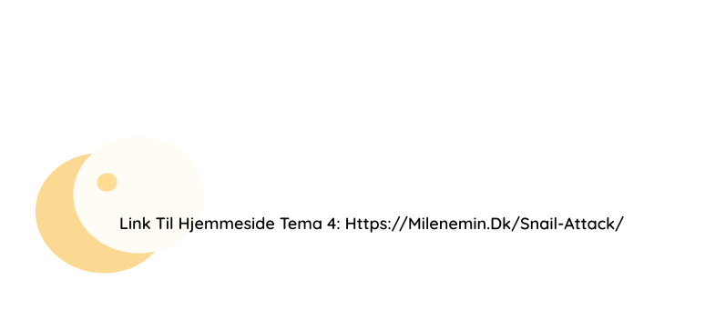
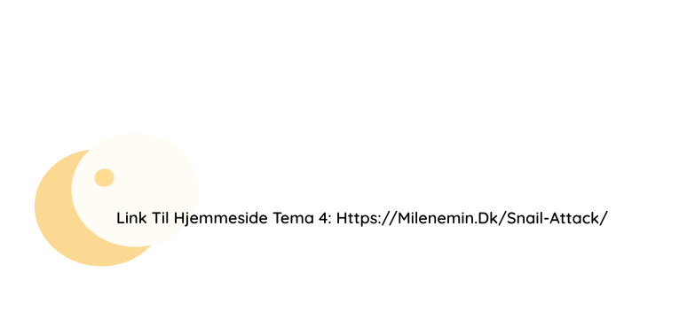

Portfolio Opgave
Tema 4
Emergency Website
Teknologier og Værktøjer
- Adobe illustrator
- JavaScript
- Forms: HTML og CSS
Adobe Illustrator: Jeg valgte en “cut-out animation”-stil i Illustrator, hvor jeg designede mit eget vektorelement og integrerede det i mit site. Det var lærerigt at fastholde en konsekvent stil og arbejde med rentegning og eksport til webformat (SVG) til hjemmesiden.

Her er den illustration jeg lavede i AI og blev uploadet som SVG fil.

JavaScript: Vi blev introducered til Javscript i denne her tema. Jeg lavede en dialogboks med en blurred baggrundseffekt, der aktiveres via en knap. Jeg implementerede en knap, der lader brugeren skifte mellem dark og
light mode.

Her er javascript koden til dark mode transitionen. I HTML laver man en knap med “checkbox” type.

Forms: Jeg opbyggede en registreringsformular til en fiktiv nødssituation med HTML og CSS. Her lærte jeg at strukturere inputfelter, tænke på tilgængelighed og brugervenligt layout i formularens opbygning.

Her er en sektion af formularen, som jeg har kodet med HTML og CSS. Jeg brugte forskellige inputtyper såsom radio buttons og tekstfelter.

 
